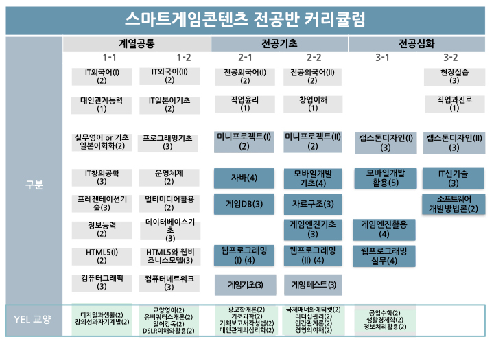

* IT융합(VR/AR, 게임) 및 응용프로그램(스마트폰 앱, 웹) 개발능력을 갖춘 전문 개발자 양성
* 소프트웨어(게임) 산업의 최신 트렌드를 이해하는 QA/GM/CS 실무인력 양성
IT융합(VR/AR, 게임) 및 응용프로그램(스마트폰 앱, 웹) 개발능력을 갖춘 전문 개발자 양성과 소프트웨어(게임) 산업의 최신 트렌드를 이해하는 QA/GM/CS 실무인력 양성을 위한 교육과정으로 편성

IT융합(VR/AR, 게임 등) 프로그래밍 분야
IT융합 프로그래밍(VR/AR, 게임 등)을 위한 체계적 전문 인력 양성 교육
응응프로그램(스마트폰 앱, 웹 등) 개발 분야
스마트폰 앱 및 모바일/PC 기반 웹 개발자 양성 교육
소프트웨어(게임) QA/CS/GM
최신 트렌드를 유연하게 따라가는 QA/CS/GM 분야 실무 능력 배양
협약업체
(주)IGS, (주)KOG, (주)엑스엘 게임즈, (주)펄스네트워크, (주)자몽, (주)위컴즈 등 다수업체
* IT융합(VR/AR, 게임 등) 개발 관련업체
* 게임 QA/GM/CS 관련업체
* 스마트폰 앱, 웹 개발 관련업체
IT융합(VR/AR, 게임 등)을 이해하며 프로그래밍을 제대로 배울 수 있는 곳
공통
게임기초, 게임테스트, 게임QA. 게임분석
응용프로그램 개발
DB, 자료구조, 알고리즘, 소프트웨어 개발방법론
웹프로그래밍, 자바, 모바일개발
캡스톤디자인
IT융합(VR/AR, 게임) 개발
게임엔진 기초, 게임엔진 활용
미니프로젝트
졸업과 동시에 업체로 취업이 가능한 곳
엑스엘게임즈(게임개발), 자몽(VR개발), KOG/펀팩토리(게임QA), IGS(게임QA), 위컴즈(응용프로그래밍) 등
언론에서도 주목하고 있는 곳
MBC, KBS뉴스, 조선일보, 동아일보, 매일신문, 전자신문, 영남일보, 서울경제신문, 노컷뉴스, 앳잡 소개